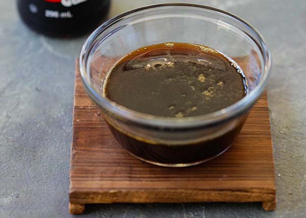

Teriyaki Sauce

A sweet and savoury soy based sauce/glaze that can be used to finish your protein of choice
Ingredient list
- 250 ml Soy sauce
- 200 ml Mirin
- 200 ml Sake
- 60-90g White sugar
- Weigh and add sugar to a saucepan.
- Combine all wet ingredients and set on stove.
- Heat mixture over a medium-low flame and stir until sugar is dissolved whilst being careful to not bring to a boil.
- Store sauce into a bottle or jar and refrigerate, Sauce can be resued and poured back into container to develop more flavour after recipe.